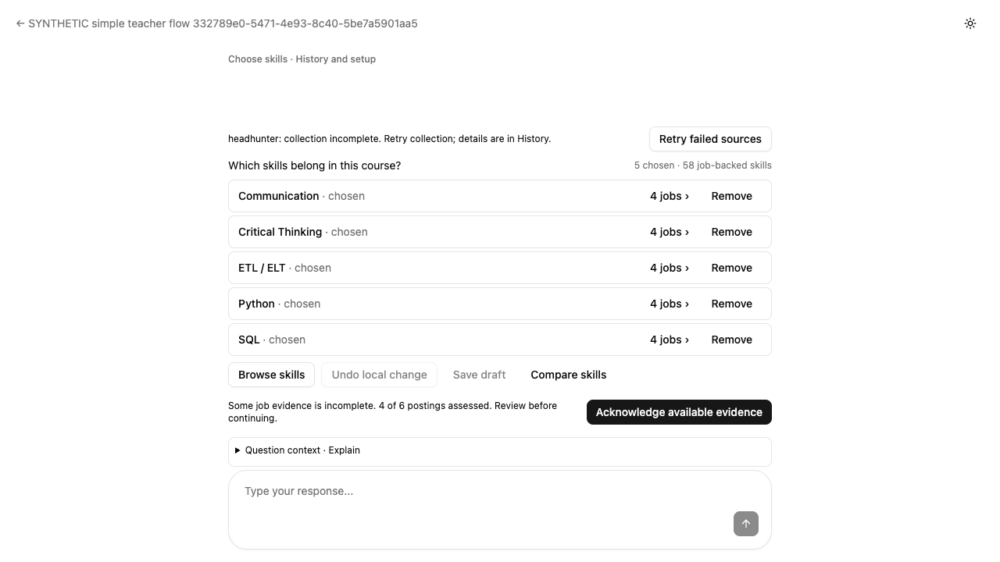
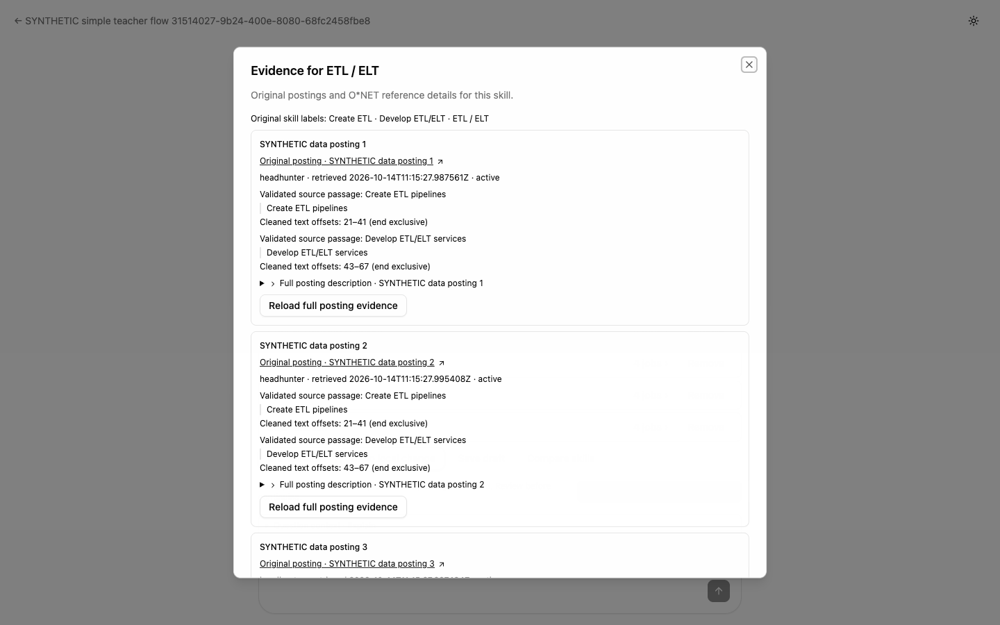
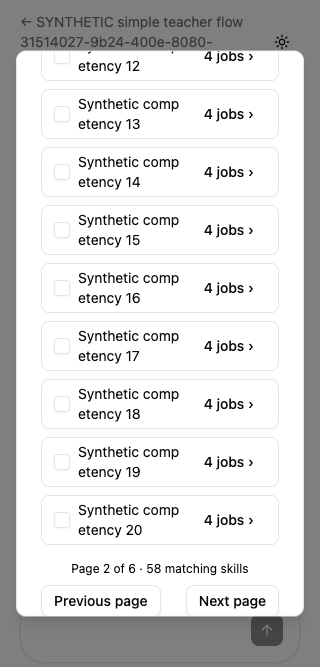

One teacher decision at a time.
The Swarm page now puts the conversation first. Browse skills, original job evidence and one compact chart open when the teacher needs them.
Confirm search terms → Choose job groups → Choose skills → Review curriculum fit
Category selection includes every eligible member across search and pages. Individual exclusions survive saving and reloading. The main view shows at most five choices.
Existing semantic groups are preserved. ETL variants remain together with every original posting link, label and validated passage. Each distinct posting is counted once.
The optional chart names the occupation and uses the original importance scale. Related Programming context is labelled clearly; missing ratings remain unavailable.
Verified with the complete skill list
The isolated acceptance database matched the size of the saved Big Data sample: 58 job-backed skills and 394 O*NET reference candidates. Selecting a category included all 58 skills across six pages; excluding one retained the other 57 through save, failure recovery and reload. The reference candidates stayed outside the selectable market-skills list.
| Simple selection | All 58 category members, filtered and off-page exclusions, real failed-save recovery and reload passed. The main conversation shows at most five choices. |
| Merged job evidence | Existing semantic-merge regressions passed. The acceptance example retained four original ETL posting links and eight validated passages; later purged content was withheld. |
| O*NET and charts | Actual ECharts SVG, exact occupation/release context, related versus direct evidence, unavailable ratings, ambiguous descriptors and chart-load fallback were exercised. |
| Workflow and students | The actual confirmation matched the saved 57 skills, exclusions, teacher and revisions; the agent stream ended completed before curriculum preparation. Negative checks rejected failed streams and missing confirmation. Explicit SQL/Neo4j publication was idempotent; nonempty learning paths, reading and quiz/mastery payloads stayed identical. |
| Layout and accessibility | The current decision and next action fit at 1280×720 and 1440×900 without main-page scrolling. Small-screen wrapping, dark mode and evidence-dialog focus return were checked. |
| Automated checks | 547 integrated frontend tests passed; affected suites were rerun after fixes. Planned backend regression cases and additional context/pattern tests passed against the test database. Lint, build and Ruff passed with the disclosed existing warnings. Counts of overlapping runs are not added together. |
Reviewed and simplified again
A fresh reviewer first rated the running interface 8/10. We repaired narrow-screen Browse controls, coverage copy and recognizable posting labels. A fresh recheck rated that scope 8.5/10 and found a keyboard focus issue; a third independent keyboard check confirmed it was fixed. Every concrete finding was addressed. These scores describe the tested synthetic workflow, not a guarantee for every teacher.
Initial independent review · Independent recheck · Final keyboard check · Final code review · Fix verification · Detailed browser acceptance







Your production draft is preserved
Read-only checks after release confirmed all 38 Big Data documents, the complete saved analysis and the same SQL and ETL choices are unchanged. Each saved choice retains four original posting links. The course remains a draft with publication revision 0; nothing was published on your behalf. The backend is healthy, and the public frontend and chart assets match the reviewed release image.
Verified application source: b5d29107e6729e37887d1ab987491d32a28f2bb9. The release uses pinned container image digests. Azure environment settings, secret references, identities, resource limits and other configuration were checked for preservation.
Verification details and practical limits
Acceptance used controlled model/provider responses with real authentication, SQL, checkpoints, Neo4j and browser rendering; it does not establish uncontrolled live-model answer quality or new live-source extraction. O*NET importance is occupation-specific context, not a universal skill ranking or a student mastery score. Existing bundle-size and LangGraph deprecation warnings remain, plus an unrelated lint suppression warning. A brief setup warning may appear during snapshot restoration and then clears. The private test environment intentionally has no Azure storage credentials. The existing divergent main branch was not merged.
Test and review record · Release identity and configuration checks · Big Data preservation checks · Public frontend asset verification · Live health checks
Rulings I made
Implementation decisions and their tradeoffs, retained from the execution ledger. Azure Express deployment handling follows Microsoft’s deployment guidance.
- Run implementation workers sequentially under the selected SDD workflow although plan permits independent Tasks 1/2 in parallel — avoids shared checkout/commit ownership ambiguity — costs modest elapsed time if unnecessary.
- Use focused task verification and the planned integrated suite, not an unrelated whole-repository suite after every worker — explicit user instruction requires narrow relevant checks and developer forbids unjustified repeats — costs missed unrelated regressions if task scope expands; broaden on evidence.
- Apply job-backed eligibility to new individual/proposed additions as well as category membership, while allowing explicit removal of unsupported saved choices — the approved spec requires every selectable skill to have a job link — costs withholding a reference-only recommendation until posting evidence exists. Task 2 context records this contract.
- Expand Task2 ownership to SkillReviewPanel.test.tsx and minimal SkillReviewPanel eligibility/count alignment if required — controller eligibility changes affect this existing caller, so keep the task independently correct before page replacement — costs a small legacy presentation edit that may be removed in Task5. Sent to original implementer; review pending final commit.
- Preserve legacy inline inspector's explicit Load behavior until Task5 removes that caller; controlled dialog fetches on open as planned — retaining existing callers includes their lazy-fetch contract — costs temporary dual disclosure behavior, with identical grouping/availability guards in both.
- Expand Task3 ownership to the single changed-snapshot fixture in WorkspaceViews.test.tsx — verified lines483–499 return snapshot-1 for a snapshot-2 request, contradicting test purpose; strict response identity is correct — costs modifying a legacy test, offset by explicit mismatch-rejection coverage. Worker authorized, all other caller tests passing.
- Permit verified related/broader descriptor choices only in read-only Explain contexts, preserving equivalent-only numeric skill resolution/patterns and proposal guards — frontend workspace-context.ts and backend workspace_service.py currently reject them, preventing the approved chart-to-agent explanation — costs a narrow accepted-context behavior expansion; add intent/ownership/release/occupation tests. No DTO/endpoint/schema changes. Task4 owns frontend context/tests; sequential Task4b owns backend alignment and model-bundle descriptor identity. Task5 waits for both.
- Task4 may simplify the shared EvidenceChart fallback text and matching test to refer only to values below — old Data/shortlist links will not exist in the new route — costs a small copy change for legacy callers. No adapter lifecycle changes.
- Paginate comparison candidate skills in groups of five before deduplicating descriptor bars — a shared descriptor could otherwise attach more than the existing20 candidate/context limit; this keeps Ask exact without truncation or DTO expansion — costs repeating the same descriptor on different skill pages, clearly labelled as5 ofN skills. Worker adding58-shared-descriptor regression.
- Extend Task5 frontend ownership to minimal SkillChoice.tsx/SkillChoice.test.tsx composition changes — current Browse->Inspect can stack dialogs and standalone Save footer can compete with page Continue, while spec requires one visible dialog/primary action — costs adapting component tests, preserving all controller behavior. Source inspection confirmed these risks atSkillChoice59/75/109. No new selection abstraction.
- Allow minimal useAgentStream reconcile-result contract and focused tests if required to keep unknown/busy execution guarded — reviewer traced status-only failures being caught by hook, so promise-resolution is not authoritative — costs a small shared hook contract change; check existing callers and actual-hook regression. No broader stream rewrite.
- Scope the final broad code review to all commits in this approved plan, b86cdac..finalHEAD, plus concrete existing-interface risks, rather than re-reviewing the reused branch's entire historical525-file change — user requires scoped work and the branch contains substantial previously deployed work and historical artifacts outside this request — costs leaving unrelated older defects outside this review; existing preservation/regression checks still exercise shared behavior. This is an intentional adaptation of the skill's default branch-merge-base range for an already-used worktree.
- Expand Task6 ownership to minimal IntegrationReview/MarketDemandPage layout and matching tests to fix real curriculum overflow — the required desktop next-action bound fails despite skill-stage smoke; compact summaries and existing paged details must retain all targets/warnings/explicitapproval/recovery — costs a narrow frontend implementation extension to acceptance work, covered by targeted tests, browser recheck, Task6 review and final review. No extra stage or guard removal.
- Reuse individually green acceptance scenarios on identical final application/harness code rather than automatically repeat their combined all orchestration — developer and plan require affected verification, not redundant suite reruns — costs missing an ordering-only interaction unless a concrete shared-state concern is identified; worker must check orchestration and rerun changed scenarios or named ordering risks.
- Extend Task6 narrowly to SkillChoice.tsx and its existing test for a count-based blocking summary and full breakable names in optional Browse — actual Unicode corpus violates no-overflow/full-inspection requirements — costs small presentation changes to a completed component; preserve exact Inspect/Remove IDs and exclusion guards, test and re-review.
- Extend Task6 narrowly to SkillChoice responsivecontrols, MarketDemandPage narrow coverage layout and SkillEvidencePanel identifiable original-link labels with corresponding tests — fresh usage exposed two small-screen defects and a missed explicit approved link-label requirement — costs modifying two completed presentation areas; preserve availability/purge guards and full controls, verify affected tests and actual desktop/mobile, then independent recheck.
- Extend Task6 to minimal CompactComparison.tsx wrapping/min-width plus existing tests — actual preserved Unicode corpus violates inspectable no-horizontal-overflow layout — costs small optional chart presentation changes; leave values/resolver/role/release/exactcontext untouched and verify focused realSVG layout.
- Run fresh simple-flow once on corrected seed despite earlier segmentedGREENevidence — seedcontract changed after earlierContinuefailure and Remap is a differententry, so review names an untestedintegrationpath — costs an additionalfullscenario; required to resolve actualverificationgap rather than claim inference as proof. No broader unchanged suites.
- Accept final review's exclusion of historical pre-b86cdac changes and divergent main — this approved plan is the review boundary and main merge is not authorized — costs leaving older unrelated defects outside this review; deployment preservation checks remain required.
- Preserve semantic merging/extraction/projection instead of rewriting them — approved presentation scope explicitly requires reuse and regression evidence — costs relying on existing algorithms for untested semantic edge cases.
- Limit model/provider claims to controlled transport and persistence contracts — acceptance intentionally uses synthetic responses — costs no claim of live collection accuracy, arbitrary model obedience or official truth of synthetic ratings.
- Keep Azure deployment identities/settings and real Big Data preservation as coordinator release checks — these occur after code review and must use read-only draft inspection — costs no reviewed deployment until the later receipts pass.
- Do not publish or change the real teacher draft during verification — user requested preservation and explicit human approval — costs testing publication only in disposable fixtures, with actual production state compared read-only.
- Defer existing framework deprecations, bundle advisories and unrelated arcd lint suppression — no demonstrated regression in this scoped change — costs continued maintenance noise and existing bundle weight.
- Do not expand into live Blob/provider behavior, unrelated Reading/Video route baselines or comprehensive accessibility/performance audits — those systems are unchanged and outside this presentation acceptance — costs limited coverage beyond retained student API, keyboard, mobile and viewport checks.
- Execute the previously authorized feature-branch push and manual production deployment without another finishing-skill option menu — the user selected this path earlier and approved the plan containing it — costs releasing the reviewed feature branch before a divergent-main merge; retain draftPR and worktree, no main merge.
- Use image-only Express rolling updates and verify Running/Succeeded plus active backend source/public frontend asset hashes instead of unsupported customrevisionSuffix/latestReady equality — actual Azure error and Microsoft official Express workflow docs require this deployment mode; latestReady is absent on current Express apps — costs losing customrevision-name tracking, mitigated by pinned image digests and exact source/asset identity receipts.
- Supply a fresh revisionSuffix only for the WorkloadProfiles frontend-domain update — this platform supports named revisions, unlike the Express backend/frontend; the current old revision and image are positively identified — costs one additional narrowly scoped deployment attempt, with original before snapshots, all configuration guards and strict active-image/readiness checks retained.
- Verify MarketDemandPage through its actual static entry bundle rather than an assumed named lazy chunk — App.tsx statically imports this route and the build has no MarketDemandPage*.js asset — costs replacing an invalid verifier assumption; preserve byte-for-byte public image comparison, assert current teacher UI markers and additionally verify all four lazy ECharts module entry assets. No application change.
- Archive the approved design requirements and sanitized acceptance screenshots instead of committing historical local mocks and original provider quotations — user-facing HTML records must be durable while private runtime/provider content remains local — costs replacing mock links with the verified implementation; requirements remain verbatim and original local files remain available.
- Keep the draft pull request unmerged and retain this worktree after the authorized feature-branch deployment — divergent main reconciliation remains outside this approval — costs a future merge reconciliation; deployed application source and final documentation commit are identified separately.